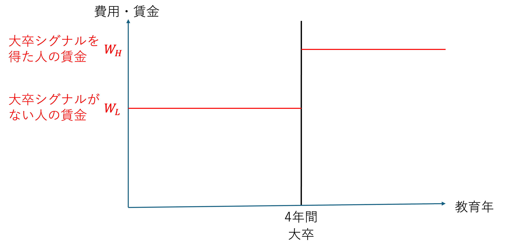
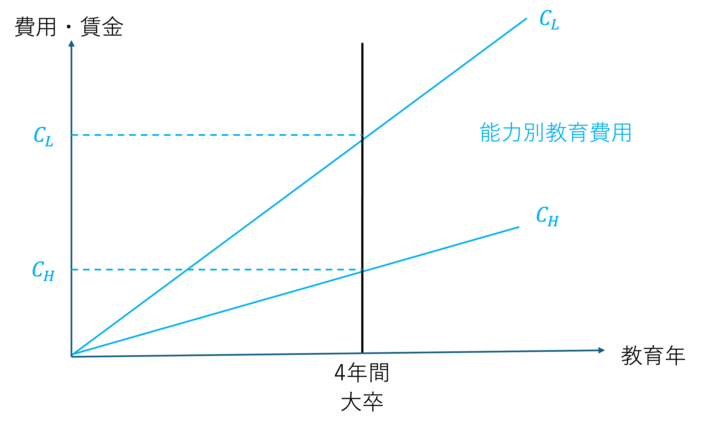
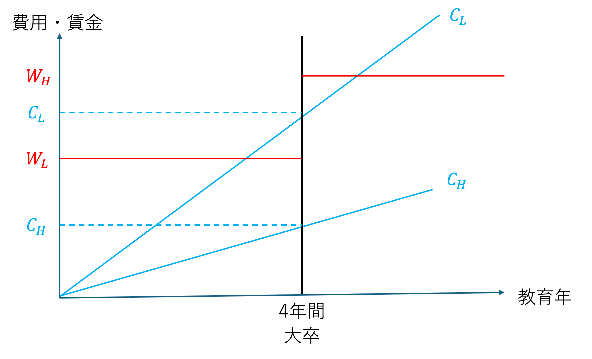
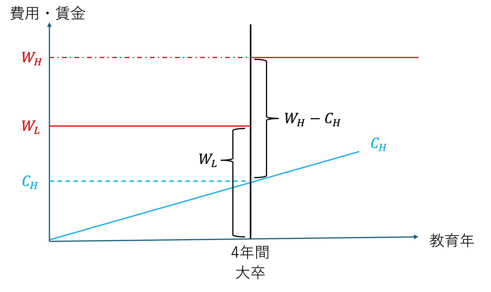
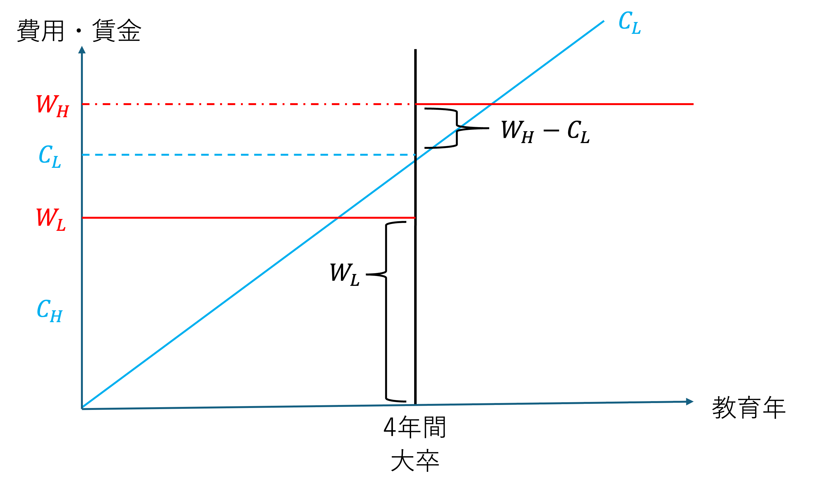

4 シグナリング理論
4.1 学習目標
- 人的資本論への疑問と反論を理解する。
- シグナリング理論を理解する。
教育が生産性を高め、それが賃金に反映されるという人的資本論の考え方に対し、反論があるとすれば、どのような反論があるでしょうか。
個人ワーク（5分）
人的資本理論（教育 → 生産性向上 → 賃金）に対する反論を考える。
ペアワーク（5分）
- お互いの答えを共有
- 違いを議論
4.2 人的資本論への疑問と反論
教育が生産性を高め、それが賃金に反映されるという人的資本論に対し、以下のような疑問や反論が提示されています。
主な反論の視点
教育の効果測定の可能性（そもそもの能力？）
生産性と所得は、生まれながらの能力によるものであり、能力の高い人間が高学位課程へと進み、結果、教育年限が長くなった。教育と賃金の不整合（人的資本が蓄積した？）
学位取得直前で退学した場合と学位を取得した場合、受けた教育は同じであれば所得は同等になるか。実質的な学びの質（教育に生産性向上効果は本当にあるか？）
大学での学びの質は初任給に反映されているか。学歴で説明できない生産性（教育を受けていない人は？）
教育を受けていなくても生産性の高い人はいる。職人は教育を受けていない。教育と経済成長の因果関係（経済成長が先？）
教育が経済成長をもたらすのか、社会・経済的に豊かになったから教育量が増えたのか。適切な教育量（学歴インフレ？）
それだけの量の教育は本当に必要なのか。学歴インフレが起きている。
4.3 シグナリング理論
理論の概要
M. Spence (1973) による、情報の非対称性に焦点を当てた理論。
就職市場
売り手：求職者（大学生）
買い手：企業人的資本理論では完全情報を前提として、企業が大学生の能力に関する情報を完全に持っていて賃金を決定する。
シグナリング理論では情報の不完全性に焦点をあてる。
買い手である企業は、求職者の能力を完全に見抜くことはできない。
学歴や資格は求職者から企業への「シグナル」として機能する。
「大卒」「大学の難易度」「大学教育の質」などがシグナルとして機能する。
フィルタリング、スクリーニング、ソーティングなどと同じ概念。
前提・考え方
能力は本人こそがよく知っており、求人する企業は分からない（情報の非対称性）。
教育費用は、個人の能力により必要なコストが変わり、本人は教育に必要な費用を理解している。
教育は個人の能力を引き上げない（かなり極端な仮定）。
教育を通して能力が開発されたのではなく、シグナルとして企業に自分の能力をアピールする。
突き詰めれば、大学進学の後、すぐに就職すれば良いという話。求職者（高校生）は、教育を受けることで（大学に行くことで）得られる便益がプラスになるように選択する。
企業が求職者の能力（生産性）を判断する方法は教育以外他にない（高い教育水準の者（大卒者）には高い給与を支払い、低い教育水準の者（高卒者）には低い給与を支払う）。
シグナリングのない世界
能力の高い者の賃金を \(W_H\)、限界生産性を \(MP_H\)、能力の低い者の賃金を \(W_L\)、限界生産性を \(MP_L\) とします。
企業が求職者の能力を理解している場合の賃金設定は、次のようになります。
\[W_L = MP_L < W_H = MP_H\]
- しかし、学歴（シグナリング）がないので、企業にとっては能力を見分ける手段がなく、全ての個人に対して平均の賃金を支払う他ありません。能力の高い者の割合を \(p\) とします。
\[W_A = (1 - p)MP_L + pMP_H\]
能力の高い者は、この賃金（ \(W_A\) ) では採用には応じません。
能力の低い者だけが \(W_A\) の賃金で採用されるようになります。
能力の低い者は生産性が低いので企業は赤字になります。
企業は賃金を \(W_L\) に下げます。
平均賃金（ \(W_A\) ）で採用に応じなかった者は、高い能力を示したことになるので、\(W_H\) の賃金で採用します。
このように、求職者（学生）が自分の能力に応じた賃金に正直に反応すれば、均衡となります。
しかし、能力の低い者の中にこの考え方を利用する者が出てきます。
企業が \(W_H\) の賃金を提示するまで採用に応じなければ、能力が高いことを示したこととなるからです。
すると、企業は \(W_H\) まで全員の賃金を上げる必要性が生じます。
企業は労働者の生産性よりも高い賃金を払っているので赤字になります。
企業は賃金を下げます。
結果的に、平均の賃金（ \(W_A\) ）を支払う他なくなります（プーリング均衡）。
情報非対称性の下で、情報の多い側が自身の特性（優良・劣悪など）を隠し、皆が同じ行動や契約を選択する状況。
市場参加者が優越を識別できないため、平均的な品質に基づいた価格や条件が提示される安定状態を指します。
特徴と事例
シグナルが機能しない：優劣による行動差がなく、情報を識別できない 事例：保険市場で、リスク高低に関わらず全員が同じ保険料を支払う状況
企業目線
能力の高い者の賃金を \(W_H\)、限界生産性を \(MP_H\)、能力の低い者の賃金を \(W_L\)、限界生産性を \(MP_L\) とします。
企業が求職者の能力を理解している場合の賃金設定は、次のようになります。
\[W_L = MP_L < W_H = MP_H\]
- 企業は求職者の能力が分からないため、同じ賃金（平均）を設定する他ないのですが
\[W_A = (1 - p)MP_L + pMP_H\]
- すると、能力の高い者を採用できないので、教育（学歴）により、\(W_L < W_A < W_H\) となるように賃金を設定します。
求職者（学生）目線
人的資本理論の時と同様に、求職者（学生）が大学に進学する条件をシグナリング理論の場合で考えてみましょう。
大卒と高卒の賃金が以下に以下のような違いがあるとします。

求職者（学生）は自分の能力（高い・低い）を分かっていて、大学を卒業するための必要な費用も理解しているとします。

これらを同じ図に表すと以下のようになります。

ここで、自分の能力が高いと分かっている求職者（学生）は、\(W_H - C_H\) が、\(W_L\) よりも高ければ、大学に進学することにします。
\[W_L < W_H - C_H\]

次に、自分の能力が低いと分かっている求職者（学生）は、\(W_H - C_L\) が、\(W_L\) よりも小さいと考え、大学に進学を諦めます。
\[W_L > W_H - C_L\]

つまり、能力の高い者は大学に進学し、能力の低いものは大学に進学しない状況は、次が満たされる場合に発生します。
\[ \begin{aligned} W_H - W_L &> C_H \\[1.0em] W_H - W_L &< C_L \end{aligned} \]
シグナリング理論だけが成り立つ社会を考えてみましょう。
個人ワーク（5分）
大学教育はどうなると考えますか？
ペアワーク（5分）
- お互いの答えを共有
- 違いを議論
4.4 フィルタリングとしての大学教育
大学教育は2つの段階でシグナリングが発せられると考えられる。
- 入学（合格）
- 卒業
このような大学（教育）の機能を「フィルタリング」と呼ぶこともある。
大学に入学した（できた）ことで、入学者の平均的な能力が高校卒業者全体の平均的な能力よりも高いことを社会に知らせている。
大学を卒業した（できた）ことで、卒業者の平均的な能力が入学者全体の平均的な能力よりも高いことを社会に知らせている。
つまり、大学が個人の能力をふるいにかけるように（フィルタリングするように）識別していると考える。
実際の数値での計算ついては、小塩隆士「教育の経済分析」P.66-69 参照。
4.5 異なる政策的な意味合い
人的資本論とシグナリング理論では、政策的な意味合いが大きく異なります。
人的資本理論
教育によって経済全体の能力が高まると考えるため、政府が積極的に教育を支援することは容易に正当化されます。教育の外部経済効果を考慮すれば、なおさらです。
教育資金を資本市場から十分に調達できない家計に対して政府が支援すべきだという政策提言（奨学金）も、この理論からは自然に導かれる。
シグナリング理論
教育は、もともと個人に備わっていた能力を浮き彫りにするだけであり、経済全体の能力向上に大きく貢献するわけではない。
教育は能力をめぐる情報の非対称性・不完全性を縮減して適材適所を可能にするものの、コストもかかるし所得格差も拡大させる。
したがって、シグナリング理論の立場からは、政府による教育への関与は人的資本論ほど強くは支持されない。もし教育のシグナリング機能が所得格差を拡大させるとすれば、政府はむしろ別途、所得再分配のための政策を講じる必要があるという結論になる。
4.6 学歴差別とシグナリング理論
シグナリング理論が当てはまるとしても、問題となるのは「縦の学歴」（高卒・大卒など）だけではなく「横の学歴」（どの大学を卒業したか）も重要です。
現在の日本では高校進学率はほぼ100%、大学進学率も大幅に上昇しており、縦よりも横の学歴がシグナリング機能をより大きく発揮しているとも言えます。
学歴差別への批判は、出身大学が受験学力のシグナルとして機能してきたこと自体は認めつつも、次の2点を問題にしています。
- 大学受験学力と「真の能力」は必ずしも一致するとは言えない
- 賃金や昇進は真の能力で決定されるべきであり、受験学力（＝出身大学）だけで決定されるべきではない
こうした学歴主義への批判の中には、受験学力を低く評価し、「教養」や「学問」としての側面からより価値を評価すべきという声もあります。
人の能力をどのように評価するかという難しい問です。
4.7 留意事項
教育を受けた結果、人的資本に変化がないという仮定は非現実的
シグナリング理論の目的は教育の能力向上を否定しているわけではない
シグナリング理論は、情報の非対称性が存在する場合に、教育がそれを軽減する機能を持っていることを示している。
実際には両方の要素が重層的に存在している。
- 教育による生産性の向上（人的資本理論）
- 潜在的な能力の選別（シグナリング理論）
- 教育による生産性の向上（人的資本理論）
どちらの側面が強いかによって、教育政策（奨学金制度など）が社会に与える影響や評価は変わってくる。
求職者（学生）が完全に自分の能力を理解しているという仮定も非現実的。実際には、教育を受けるにつれ、自分の能力を理解していくと考えた方が自然。
流動性制約のために、能力があっても教育を受けられない場合がある。
シグナリング機能がうまく発揮されれば、経済全体の生産性が高まるという期待もできる（適材適所）。
日本の大学の場合、人的資本理論とシグナリング理論のどちらが強いと思いますか？
個人ワーク（5分）
日本の大学は、人的資本理論で説明される能力向上の要素、シグナリング機能で説明される潜在能力を示す機能のどちらが強いと思いますか？
ペアワーク（5分）
- お互いの答えを共有
- 違いを議論
4.8 本日の課題
課題1：大学入試の撤廃
大学に誰でも入れるようになった場合（入試がなくなった場合）の変化について、以下の両方の観点から解答しなさい。 * 人的資本理論の観点 * シグナリング理論の観点
課題2：シグナルの妥当性
次の特徴は、シグナリング理論における「シグナル」と考えられますか。理由をつけて説明しなさい。 1. 面接にネクタイを締めてきた 2. 身長 3. 学生の頃に部活をやっていた